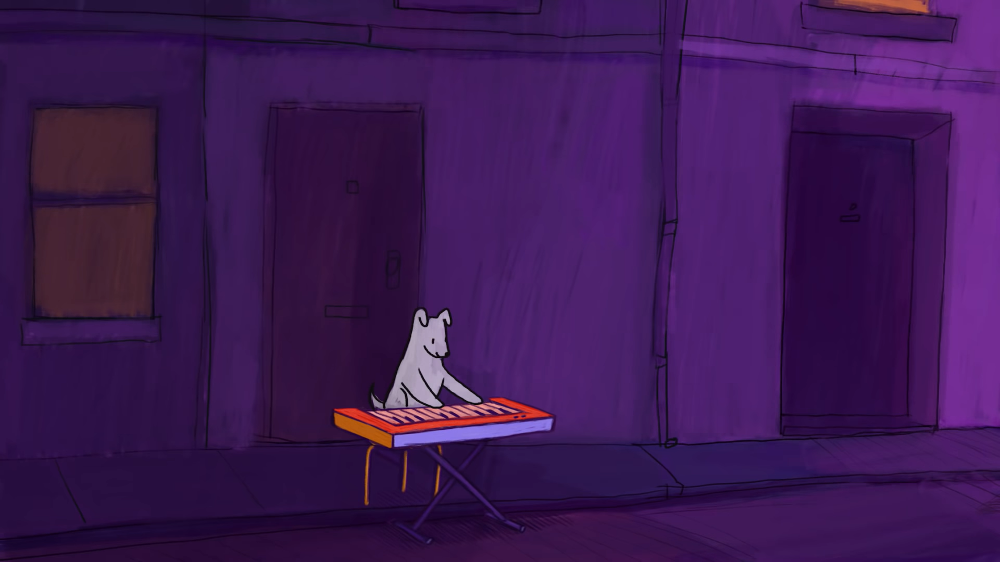

As wonderful as this all seems.
This is beyond our means it,s just a dream.
This is beyond our means
It's just a dream
It's just a dream
I can't get you all that stuff
But I can give you all my love
Free love

I used to roll the dice
Feel the fear in my enemy's eyes
Listen as the crowd would sing
Now the old king is dead! Long live the king!
One minute I held the key
Next the walls were closed on me
And I discovered that my castles stand
Upon pillars of salt and pillars of sand
I hear Jerusalem bells are ringing
Roman Cavalry choirs are singing
Be my mirror, my sword and shield
My missionaries in a foreign field
For some reason I can't explain
Once you go there was never, never a honest word
And that was when I ruled the world